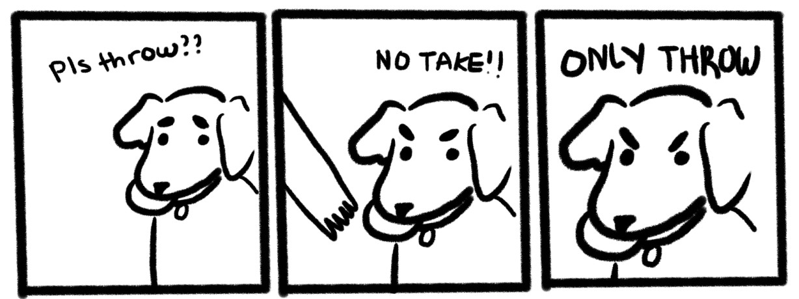

In a recent release of the MongoDB Node.js driver (v6.5.0) the team completed the effort of getting all our asynchronous operations to report an accurate asynchronous stack trace to assist in pinpointing error origination. Here, I'll walk you through what this feature of JavaScript is and how to obtain it at the low price of zero-cost.
First, what is a call stack? A call stack is a hidden data structure that stores information about the active subroutines of a program; active subroutines being functions that have been called but have yet to complete execution and return control to the caller. The main function of the call stack is to keep track of the point to which each active subroutine should return control when it finishes executing.
Let's go through an example, take a program that parses a string from its arguments that is an equation like "2+2" and computes the result:
main()
-> parseString()
-> splitString()
-> stringLength()
-> stringToNumber()
-> add()
-> printResult()
-> return;
Most of us are familiar with the above procedural paradigm (whether from JavaScript, C, Java, or Python) where
each step in the program is synchronous, so our call stack is a clear ordering of dependent procedures. For
example, if stringLength fails, the call stack would contain stringLength,
splitString, parseString, and main as active procedures that have yet to
return to their callers. The error system of our runtime uses this stack trace to generate a helpful error trace:
file://addNumbers.mjs:35
throw new Error('cannot get string length')
^
Error: cannot get string length
at stringLength (file://addNumbers.mjs:35:11)
at splitString (file://addNumbers.mjs:17:17)
at parseString (file://addNumbers.mjs:11:19)
at main (file://addNumbers.mjs:4:5)
Everything changes when we shift to an asynchronous programming model, as the introduction of asynchronous work means we no longer have strictly dependent procedures. Essentially, async programming is about setting up tasks and adding handling that will be invoked some time later when the task is complete.
Let's add I/O (a read from standard in) into our program to see how this changes our call stack:
main()
-> readStdin(handleUserInput)
// When the user finishes typing
handleUserInput()
-> parseString()
-> splitString()
-> stringLength()
Now, main's only job is to ask the runtime to read from stdin and invoke a function of our choice when it is
done doing so. This means main is no longer an active procedure; it returns leaving it up to the runtime to keep
the process running until it has input from stdin to hand back to our function handleUserInput.
Here's what the stack trace looks like:
file://addNumbers.mjs:42
throw new Error('cannot get string length')
^
Error: cannot get string length
at stringLength (file://addNumbers.mjs:42:11)
at splitString (file://addNumbers.mjs:24:17)
at parseString (file://addNumbers.mjs:18:19)
at ReadStream.handleUserInput (file://addNumbers.mjs:11:5)
at ReadStream.emit (node:events:511:28)
at addChunk (node:internal/streams/readable:332:12)
at readableAddChunk (node:internal/streams/readable:305:9)
at Readable.push (node:internal/streams/readable:242:10)
at TTY.onStreamRead (node:internal/stream_base_commons:190:23)
No sign of main, only handleUserInput.
This is a common hazard of asynchronous programming: you are always replacing the record of your active procedures as they are all performing task setup that completes and the callbacks they created are later invoked by the runtime.
Asynchronous programming has always been at the heart of JS and is one of the central selling points of using Node.js.
In 2015, the first Long Term Support version of Node.js was released, and with it came a stable standard library that popularized a common pattern for handling asynchronous tasks. All asynchronous tasks would accept a callback as their last argument, with the callback taking at least two arguments: an error, and the task's result. The pattern was that if the first argument was truthy (an error object) the task failed, and if it was not then the second argument would contain the result.
Here's a simplified example of a function that reads a file:
readFile('filename.txt', (error, data) => {
if (error) {
console.error(error);
return;
}
console.log('file contents', data);
});
The Node.js callback pattern is ubiquitous and familiar, resulting in many popular libraries such as the MongoDB Node.js driver adopting it as well.
 credit: cupcakelogic
A challenge associated with the callback pattern is the requirement that the implementer keep in mind execution expectations manually, otherwise they can end up with a confusing order of operations.
Typically this is something that should be abstracted to the runtime or language, which can be broken down as follows:
Error handling
Properly implementing the callback pattern means errors are passed as variables to a chain of handlers so they
eventually reach the top-level initiator of the async operation. The syntax and keywords
throw/try/catch can no longer be used for control flow.
try {
readFile('filename', (error, data) => {
if (error) {
/* ? */
}
});
} catch (error) {
// So what's the truth?
}
Runtime order
Callbacks also demand the developers ensure execution order is consistent. If a file is successfully read and the
contents are returned in the callback passed to readFile, that callback will always run after the
code that is on the line following readFile. However, say readFile is passed an invalid
argument, like a number instead of a string for the path. When it invokes the callback with an invalid argument
error we would still expect that code to run in the same order as the success case:
Invocation of readFile |
Questionable readFile Implementation |
readFile(0xf113, (error, data) => {
if (error) {
console.log('cannot read file', error);
return;
}
console.log('contents:', data);
});
console.log('starting to read file');
|
function readFile(filename, callback) {
if (typeof filename !== 'string') {
callback(new Error('invalid argument'));
return;
}
// open & read file ...
}
|
The code above prints:
cannot read file Error: invalid argument
starting to read file
Whereas when I change readFile to be called with a non-existent path:
starting to read file
cannot read file Error: /notAPath.txt Does Not Exist
This is unexpected! The implementer of readFile calls the callback synchronously for an invalid type so readFile does not return until that callback completes. It is fairly easy to write callback accepting functions that inconsistently order their execution in this way.
Introducing a more structured approach: Promises. A Promise is an object that handles the resolution or rejection of an async operation, mitigating the above issues and allowing for many async operations to be chained together without needing to explicitly pass a finalizer callback through to each API that would indicate when all tasks are done.
| Callback Style | Promise Style |
client.connect((error) => {
if (error) {
return done(error);
}
client
.db()
.collection('test')
.findOne({}, (error, document) => {
if (error) {
return done(error);
}
console.log(document);
return done();
});
});
|
client
.connect()
.then(() => client.db().collection('test').findOne({}))
.then(document => console.log(document));
.catch(error => console.error(error));
|
Note how in the promise code there is one error handling case as opposed to the two in the callback case. The
ability to
chain promises
allows us to treat many async operations as one, the catch handler would be called if either the
connect or the find methods were to throw an error. This chaining is convenient, but
when writing JavaScript today we do even better by using special syntax for handling promises.
async/await
Mid-2017 JavaScript engines shipped support for async/await syntax allowing programmers
to write asynchronous operations in a familiar procedural format. Using async/await
allows the programmer to encode their logical asynchronous dependencies right into the syntax of the language.
Let's return to our user input example, as we can now "await" the input which keeps
main as the active procedure that began the task to read from standard in.
"For
awaitthe suspend and resume points coincide and so we not only know where we would continue, but by coincidence, we also know where we came from."source: Zero-cost async stack traces
When the input is available, readStdin will resolve and we can continue with our parsing.
async main()
-> await readStdin()
-> parseString()
When the JavaScript engine reaches the "await", main is suspended. The engine
is free to handle other tasks while the read is waiting for our user to type. We can now encode into the syntax of
the function that it will suspend until some other task completes, and when it continues it maintains the context
of everything that was in scope when it started.
file://addNumbers.mjs:43
throw new Error('cannot get string length')
^
Error: cannot get string length
at stringLength (file://addNumbers.mjs:43:11)
at splitString (file://addNumbers.mjs:25:17)
at parseString (file://addNumbers.mjs:19:19)
at main (file://addNumbers.mjs:9:5)
at processTicksAndRejections (node:internal/process/task_queues:95:5)
at async file://addNumbers.mjs:62:1
"The fundamental difference between
awaitand manually constructed promises is thatawait X()suspends execution of the current function, whilepromise.then(X)will continue execution of the current function after adding theXcall to the callback chain. In the context of stack traces, this difference is pretty significant."
try {
await client.connect();
const document = await client.db().collection('test').findOne({});
console.log(document);
} catch (error) {
console.error(error);
}
Prior to completing the async/await conversion down to the internal network layer of the
driver, our error stack would begin at the point of converting a server's error message into a JavaScript,
such as:
MongoServerError: Failing command via 'failCommand' failpoint
at Connection.onMessage (./mongodb/lib/cmap/connection.js:231:30)
at MessageStream.(anonymous) (./mongodb/lib/cmap/connection.js:61:60)
at MessageStream.emit (node:events:520:28)
at processIncomingData (./mongodb/lib/cmap/message_stream.js:125:16)
at MessageStream._write (./mongodb/lib/cmap/message_stream.js:33:9)
at writeOrBuffer (node:internal/streams/writable:564:12)
at _write (node:internal/streams/writable:493:10)
at Writable.write (node:internal/streams/writable:502:10)
at Socket.ondata (node:internal/streams/readable:1007:22)
at Socket.emit (node:events:520:28)
^-- Sadness, that's not my code...
Now, post v6.5.0, the stack trace points directly back to the origination of an operation (we see you
main.js!):
MongoServerError: Failing command via 'failCommand' failpoint
at Connection.sendCommand (./mongodb/lib/cmap/connection.js:290:27)
at process.processTicksAndRejections (node:internal/process/task_queues:95:5)
at async Connection.command (./mongodb/lib/cmap/connection.js:313:26)
at async Server.command (./mongodb/lib/sdam/server.js:167:29)
at async FindOperation.execute (./mongodb/lib/operations/find.js:34:16)
at async tryOperation (./mongodb/lib/operations/execute_operation.js:192:20)
at async executeOperation (./mongodb/lib/operations/execute_operation.js:69:16)
at async FindCursor._initialize (./mongodb/lib/cursor/find_cursor.js:51:26)
at async FindCursor.cursorInit (./mongodb/lib/cursor/abstract_cursor.js:471:27)
at async FindCursor.fetchBatch (./mongodb/lib/cursor/abstract_cursor.js:503:13)
at async FindCursor.next (./mongodb/lib/cursor/abstract_cursor.js:228:13)
at async Collection.findOne (./mongodb/lib/collection.js:274:21)
at async main (./mongodb/main.js:19:3)
^-- Yay, that's my code!
Additional Resources